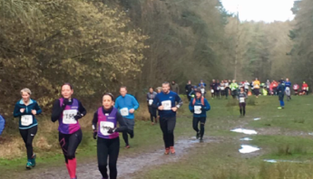
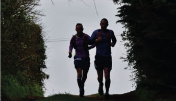
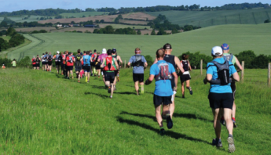
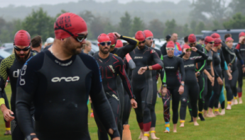
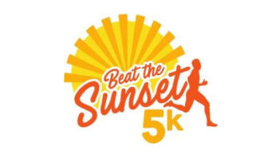
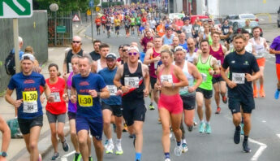
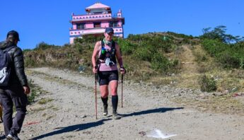

Go Beyond events are established and popular endurance events in Northamptonshire and beyond. Find your next adventure below.
View Full Calendar About UsWe are proud to be supporters of SheRACES. Explore all Go Beyond Challenge events below.

A multi-terrain 5k, 10k or 15k run around Irchester Country Park and 7.5k & 15k at Fermyn Woods Country Park. If you like things a little more… well dirty!
More about the Dirt Run
This 43-mile start to the ultra running season takes you through stunning Buckinghamshire countryside to picturesque Little Venice in London, along the Grand Union Canal.
More about Country to Capital
A choice of the 54-mile Rose or the 26.2 Rosebud, taking you on a journey through beautiful Northamptonshire along country trails, roads and towpath.
More about Rose of the Shires
The 10K, half marathon, three-quarter marathon, marathon and 35-mile race. Based in Naseby, it takes you through picturesque Northamptonshire country estates.
More about Shires & Spires
Suitable for all abilities — cyclists through the country lanes of picturesque Northamptonshire. 30, 40 or 60 mile route options available.
More about the Cyclosportive
The very popular sprint distance Team Relays provides a fast and fun way to compete and enjoy triathlon. Open to clubs and individual teams — for everyone from beginners to experienced triathletes.
More about the Team Relays
A super quick 5K road race on a Sunday evening in Northamptonshire. Like a fun social event open to individuals and club runners alike.
More about Beat the Sunset
A 13.1-mile loop around the town, starting at the historic Market Square, following the river past Northampton's three main sporting grounds, through three beautiful parks.
More about the Northampton Run
Forty-eight miles along the Thames from Oxford to Henley on two of the country's National Trails. Stunning countryside views, beautiful locks and traditional rowing clubs.
More about the Thames Trail
This epic 120-mile race over five days runs from the ancient capital of Nepal through its beautiful foothills.
More about Capital to CountryWe love what we do and we never take it for granted. We work hard to put on amazing events for our running friends in Northants, the UK and beyond.
We want you to think of us when you're looking for your next athletic adventure. Perhaps because the event was amazing, or the friends, or the organisation. Whichever it was, we hope to see you soon.
More about Go Beyond Challenge

We are very aware that ultramarathon events are often dominated by men. At Go Beyond Challenge we are striving to reduce the gender gap, encouraging more women to take part in long distance running.
Read about She Races